단원
1
2
3
4
5
6
놀이 시작
놀이 방법
놀이 방법
- 단원과 출제 문항 수를 정합니다.
- 15초의 제한 시간 동안 학생들은 문제의 O,X를 몸으로 나타냅니다.
- 모든 학생들이 답을 나타내면 선생님은 정답을 확인합니다.
- 문제를 틀린 학생은 탈락하고, 맞힌 학생은 다음 문제를 풉니다.
- 모든 학생이 문제를 다 풀지 못하고 탈락했을 경우,
 를 이용하여 퀴즈를 초기화 합니다.
를 이용하여 퀴즈를 초기화 합니다. - 끝까지 문제를 다 푼 학생의 이름을 입력합니다.
15
50×70=3500입니다.
36×12는 36을 12번 더한 것과 같습니다.
5 × 22를 바르게 계산했습니다.
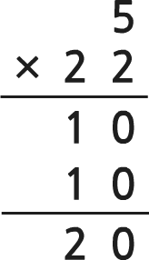
123×4=462입니다.
희원이는 색종이 20장이 들어 있는 상자를
20개를 가지고 있습니다.
희원이가 가진 색종이의 수는
모두 40장입니다.
20개를 가지고 있습니다.
희원이가 가진 색종이의 수는
모두 40장입니다.
45×12를 바르게 계산했습니다.
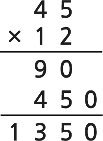
610×5=3050입니다.
27을 8번 더한 값은 216입니다.
모눈종이의 곱셈식은 17×14입니다.
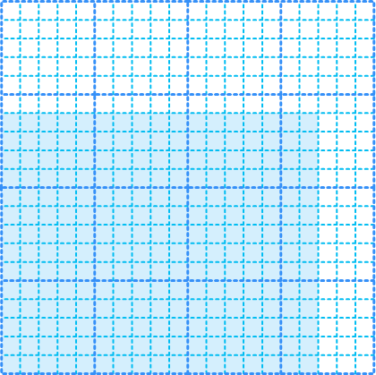
223×4=882입니다.
수 모형을 똑같이 두 부분으로
나누면 아래 그림과 같습니다.
나누면 아래 그림과 같습니다.
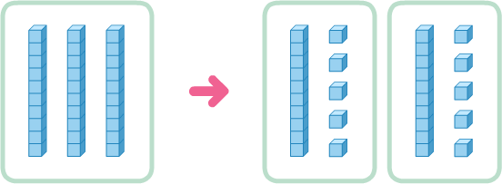
70÷7=10, 50÷2=20입니다.
80÷3=26…2에서 26은 몫입니다.
3×7=21, 21+2=23은 나눗셈 23÷2를
맞게 계산했는지 확인하는 식입니다.
맞게 계산했는지 확인하는 식입니다.
바나나 35개를 한 봉지에 4개씩 담아 나누어주면 8봉지가 나오고 2개가 남습니다.
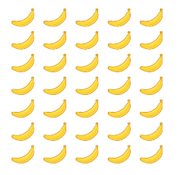
840÷2=420입니다.
세 자리 수 나눗셈을 세로 계산할 때
백의 자리부터 계산합니다.
백의 자리부터 계산합니다.
나눗셈 30÷2의 몫은 30에서 2를
0이 될 때까지 뺀 횟수와 같습니다.
0이 될 때까지 뺀 횟수와 같습니다.
나누는 수와 몫의 곱에 나머지를 더하면
나누어지는 수가 됩니다.
나누어지는 수가 됩니다.
÷6=7…3일 때, 는 43입니다.
원을 그릴 때 컴퍼스의 침이 꽂혔던 점을 원의 중심이라고 합니다.
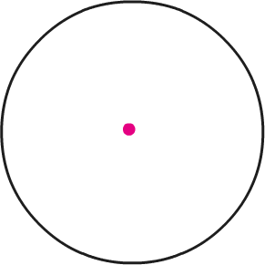
원의 중심과 원 위의 한 점을 이은
선분을 지름이라고 합니다.
선분을 지름이라고 합니다.
원의 지름이 30 cm일 때,
반지름은 15 cm입니다.
반지름은 15 cm입니다.
가장 큰 원의 지름은 24 cm 입니다.
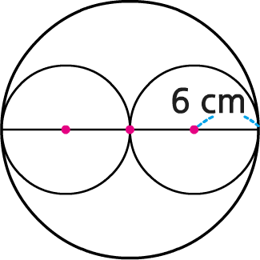
원의 지름은 컴퍼스의 침과
연필까지의 거리입니다.
연필까지의 거리입니다.
원을 지나는 선분 중 길이가 가장 긴 선분은 선분ㄹㅊ입니다.
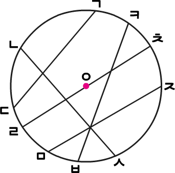
컴퍼스를 벌린 길이가 13 cm일 때
그린 원의 지름은 13 cm입니다.
그린 원의 지름은 13 cm입니다.
모눈종이 한 칸의 가로와 세로가 각각 1 cm라면 가장 큰 원의 반지름은 2 cm입니다.
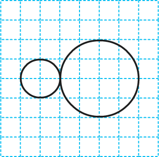
지름이 40 cm인 원을 그린다면
컴퍼스를 20 cm만큼 벌립니다.
컴퍼스를 20 cm만큼 벌립니다.
다음 모양을 그리기 위해 컴퍼스의 침을 4번 꽂아야 합니다.
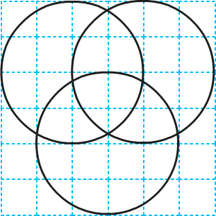
분자가 분모보다 작은 분수를
진분수라고 합니다.
진분수라고 합니다.
분자가 분모와 같거나 분모보다 큰 분수를
대분수라고 합니다.
대분수라고 합니다.
, , 는 1과 같습니다.
10의 은 3입니다.
와 은 가분수이고, 은 진분수입니다.
보다 가 더 큰 분수입니다.
와 중에서
가 더 큰 분수입니다.
가 더 큰 분수입니다.
6의 은 2입니다.
자연수와 진분수로 이루어진 분수를
가분수라고 합니다.
가분수라고 합니다.
수 카드 4, 5, 6으로 만들 수 있는
진분수는 입니다.
진분수는 입니다.
1 리터는 1 L, 1 밀리리터는 1 mL라고 씁니다.
3500 kg은 3 kg 500 g입니다.
5200 mL는 5 L 200 mL라 쓰고,
5 리터 200 리터라고 읽습니다.
5 리터 200 리터라고 읽습니다.
킬로그램보다 더 큰 단위는 톤이고,
밀리리터보다 더 큰 단위는 리터입니다.
밀리리터보다 더 큰 단위는 리터입니다.
2 L 300 mL+1 L 600 mL
=1 L 900 mL입니다.
=1 L 900 mL입니다.
5 kg 300 g-4 kg 100 g
=2 kg 100 g입니다.
=2 kg 100 g입니다.
주전자와 냄비 중에서 들이가 더 많은 것은
냄비입니다.
냄비입니다.
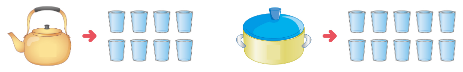
축구공의 무게는 약 450 kg입니다.
5 t과 5600 kg 중에서 무게가
더 무거운 것은 5600 kg입니다.
더 무거운 것은 5600 kg입니다.
수조에 물 1 L 500 mL가 들어 있었습니다.
수조에 물을 2 L 100 mL 더 부었을 때
수조에 들어 있는 물은 3 L 600 mL입니다.
수조에 물을 2 L 100 mL 더 부었을 때
수조에 들어 있는 물은 3 L 600 mL입니다.
조사한 수를 그림으로 나타낸 그래프를
그림그래프라고 합니다.
그림그래프라고 합니다.
그림그래프에서 이 나타내는 수는 1명,
이 나타내는 수는 10명입니다.
이 나타내는 수는 10명입니다.

수학을 좋아하는 학생은 31명입니다.
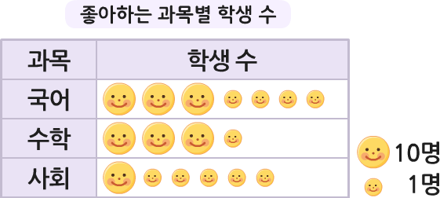
사과 수확량이 가장 많은 마을은
도담 마을입니다.
도담 마을입니다.
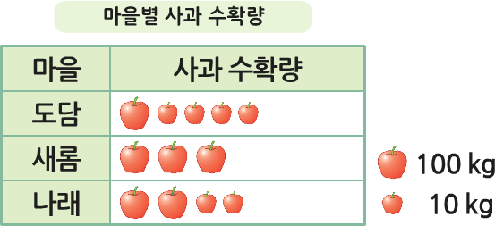
표를 보고 그림그래프로 나타낼 때
단위는 1가지로 나타내는 것이 좋습니다.
단위는 1가지로 나타내는 것이 좋습니다.
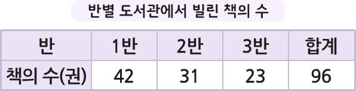
을 10권, 을 1권으로 나타내려고 합니다.
1반이 빌린 책의 수는 4개,
2개를 그려야 합니다.
1반이 빌린 책의 수는 4개,
2개를 그려야 합니다.
그림그래프에서 그림의 수를 비교하면
수량의 많고 적음을 알 수 있습니다.
수량의 많고 적음을 알 수 있습니다.
튤립을 좋아하는 학생은 400명입니다.
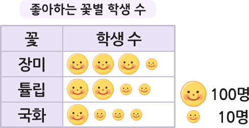
장미를 좋아하는 학생은 국화를 좋아하는
학생보다 180명 더 많습니다.
학생보다 180명 더 많습니다.
판매한 주스의 수가 포도 맛 주스의 2배인
주스는 레몬 맛 주스입니다.
주스는 레몬 맛 주스입니다.
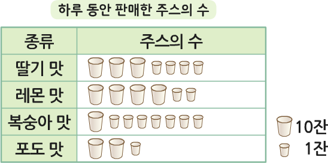
1/10
정답
다음 문제
처음부터
친구들이 끝까지 잘 풀었어요.
모두 축하해 주세요.
모두 축하해 주세요.
다시 하기